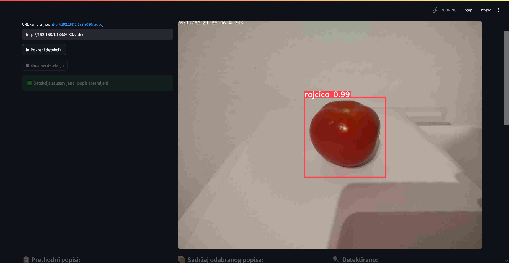
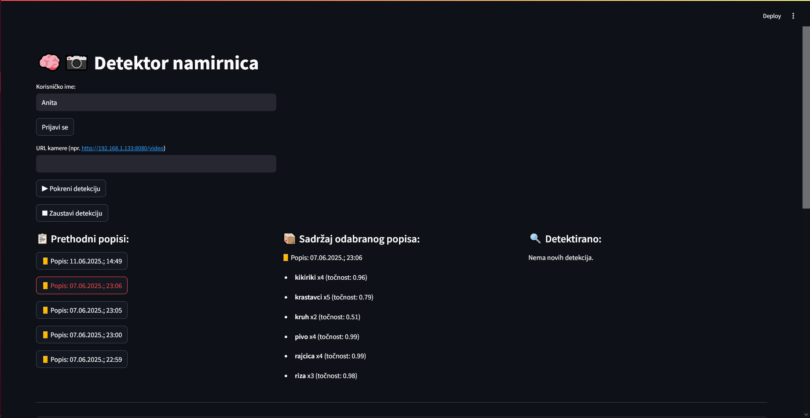
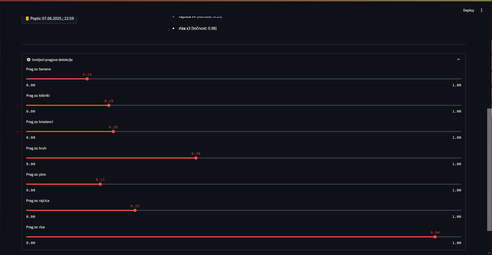
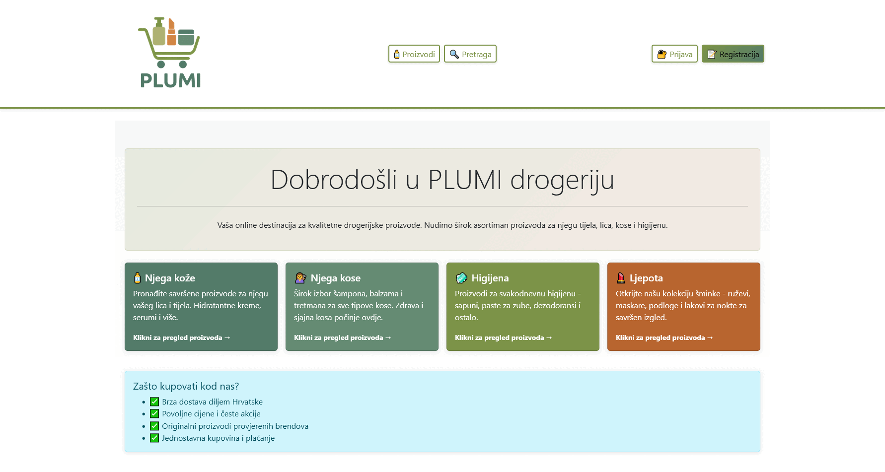
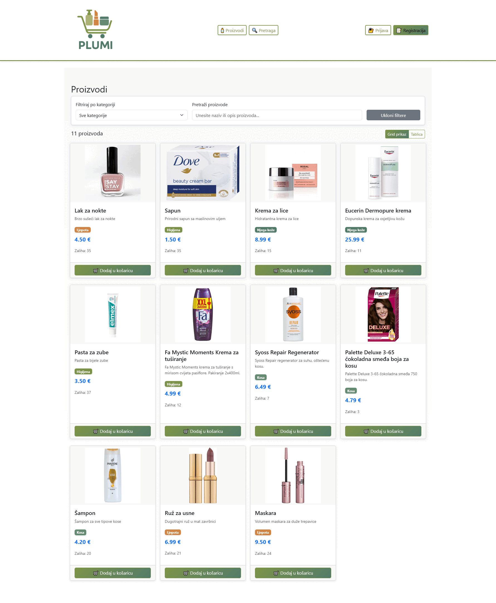
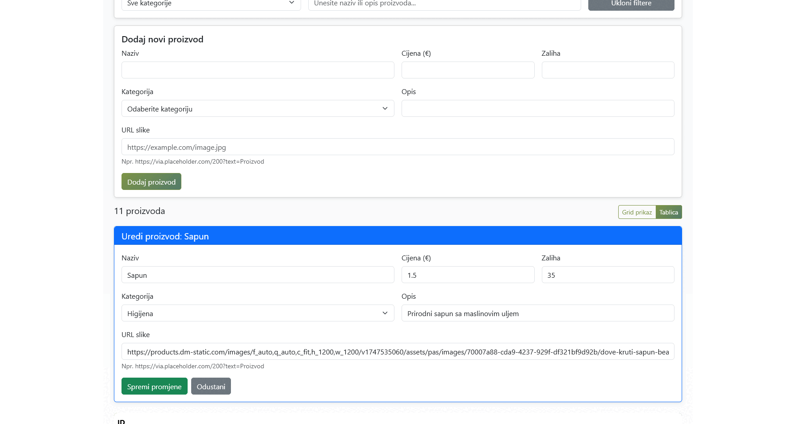
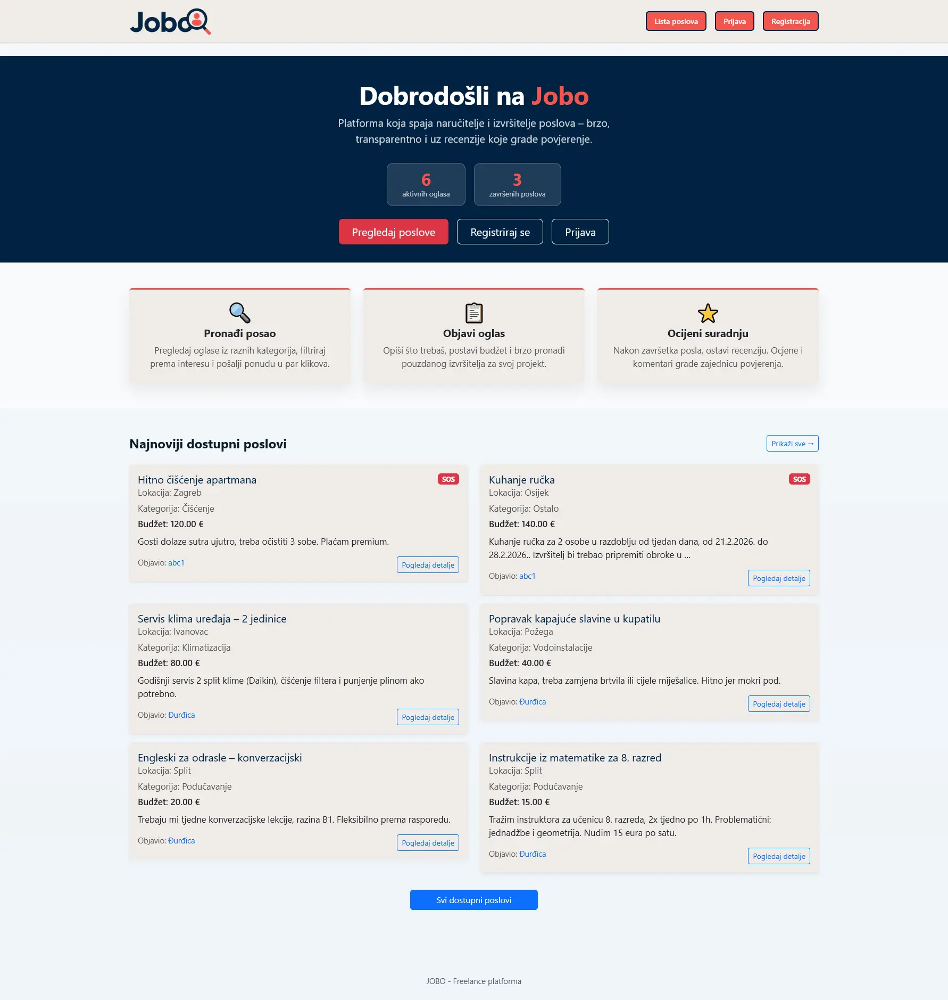
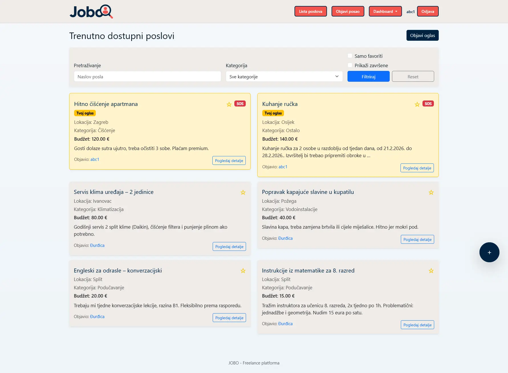
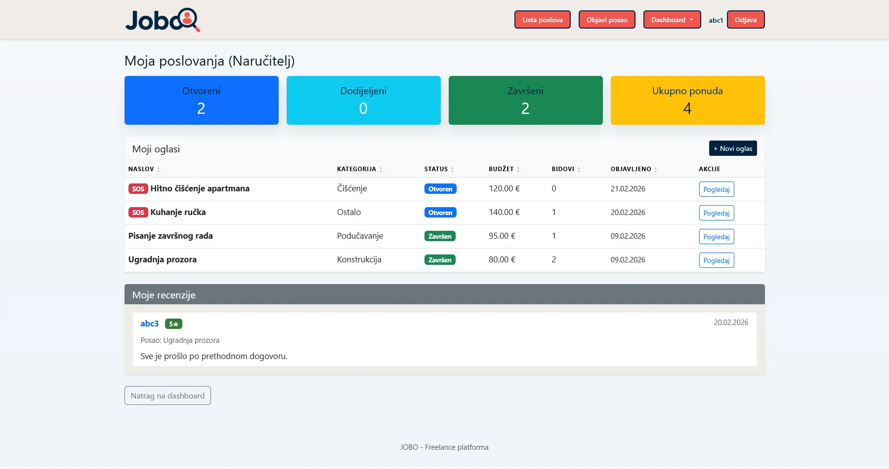

Datum rođenja: 11.2.1999.
Mjesto stanovanja: Vladislavci
Portfolio
github.com/anitaivkovKontakt
aivkov212@gmail.comUporna sam, analitična i organizirana osoba koja voli kreativno pristupiti rješavanju problema. Najbolje funkcioniram kada imam jasnu strukturu, ali istovremeno volim istraživati nove načine kako nešto napraviti.
U slobodno vrijeme najviše me opuštaju aktivnosti koje uključuju kreativnost i detaljan rad. Često istražujem nove male kreativne projekte, što mi pomaže održati ravnotežu između obaveza i privatnog života, a najviše me veseli kada mogu nešto izraditi i pokloniti nekome.
Volim aktivnosti koje zahtijevaju strpljenje i preciznost, što se često vidi u mojem pristupu učenju i projektima.









Hrvatski
Materinski jezik
Engleski
C1 razina
Talijanski
A2 razina